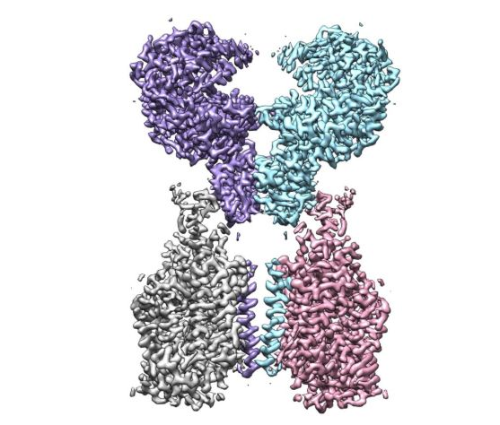

封面报道上篇|看清病毒的样子_财新周刊频道_财新网
原文链接 备份链接 已经致7.8万多人感染、2700多人死亡的新冠病毒到底长什么模样？它又将何去何从？ 近期，世界各地病毒实验室里的“病毒猎手”们借助冷冻电镜技术，得以管窥其真容。他们给新冠病毒拍了大分子高清照片，看清楚它的分子级别的结 …

近日，中国工程院副院长、呼吸与危重症医学专家王辰院士在采访中提到，新冠病毒是有可能转成慢性的，像流感一样长期在人间存在的病，对此我们要做好准备。
或许是认同这一判断，越来越多的药企和研究机构正加入研发新冠病毒疫苗和特效药的行列。
在这场长跑中，有一环节让人类得以加速，那就是对于新冠病毒受体 ACE2 的完整结构解析，以及新冠病毒表面 S 蛋白与 ACE2 的复合物结构解析。
“在 SARS 病毒和新冠病毒侵入人体的过程中，ACE2 就像是‘门把手’，病毒抓住它，从而打开了进入细胞的大门”，西湖大学周强团队如此解释道。
最近，透视这个 “门把手” 的重要研究，便出自这个实验室。

图丨ACE2-B0AT1 复合物的冷冻电镜密度图（来源：西湖大学）
美国东部时间 2020 年 3 月 4 日上午 10 点左右，Science 杂志在线发表了题为 “Structural basis for the recognition of the SARS-CoV-2 by full-length human ACE2” 的研究论文，报道了周强团队首次成功解析新型冠状病毒细胞表面受体 ACE2 的全长三维结构，以及新型冠状病毒表面 S 蛋白受体结合结构域与细胞表面受体 ACE2 全长蛋白复合物的三维结构，更进一步揭开新冠病毒入侵人体细胞的神秘面纱。
周强研究员在接受 DeepTech 独家专访时解读道：“首先，我们第一次看清了全长宿主细胞受体 ACE2 的结构，而且看到 ACE2 以二聚体形式存在。之前的工作只解析了 ACE2 的一部分结构，这个结构是单体状态，原因是因为缺少介导二聚化的结构域。这就好比你原来以为它是一只手工作的，而实际上它是两只手在一起工作的，增加了我们对它工作机理的认识。随后，我们解析了病毒的 S 蛋白的受体结合结构域与全长 ACE2 复合物的结构，看清了它们二者的相互作用方式，这对于我们后续设计针对性的药物能够提供很好的参考。”
 图丨周强（来源：西湖大学）
图丨周强（来源：西湖大学）
在过去两年，实验室一直在研究人源氨基酸转运蛋白复合物的结构和功能，锁定了数种目标蛋白，ACE2 就是其中一种。此后新冠肺炎疫情爆发，团队因此迅速提升 ACE2 研究工作的优先级，以最快速度取得研究成果，为后期药物研发提供了关键信息。
而这两项研究之前，西湖大学也已是国内少有的拥有顶尖冷冻电镜平台的高校之一。“自西湖大学成立以来，我们用最短的时间内成功建立了冷冻电镜平台，拥有两台世界上最先进的 Krios+K3 电镜设备，这为我们顺利解析这些复合物的结构奠定了硬件基础”，周强说。
2015 年，Nature 子刊 Nature method 就将冷冻电镜技术评为年度最受关注技术。在过去几年里，冷冻电子显微镜技术逐渐成为结构生物学的重要研究工具。

图丨曾因冷冻电镜获奖的三位科学家Joachim Frank 、Jacques Dubochet、Richard Henderson
冷冻电镜技术的三位先驱者，也凭借对冷冻电镜技术的开拓和发展，获得了 2017 年诺贝尔化学奖。
由于冷冻电镜的发展，各种生物大分子的结构能在接近生理状态下被精确解析。但需要指出，在这场病毒 “侦查战” 中，并非有了冷冻电镜就万事俱备。因为，冷冻电镜能够发挥作用的关键前提之一是成功制备高质量的样品。
周强进一步解释道：“在此次研究中最大的难点在于获取稳定的全长 ACE2 蛋白。如果没有好的样品，空有强大的冷冻电镜也是巧妇难为。ACE2 是一种膜蛋白，正常情况下我们很难获得稳定的全长 ACE2 蛋白。凭借前期研究的积累，我们通过共表达 B0AT1 和 ACE2 蛋白，成功地稳定住了 ACE2 蛋白，最终在此基础上解析了它的结构”。
和国内其他许多投身于此次疫情的科研团队一样，在两项成果发布之后，周强实验室很快又投入到了下一个阶段的研究中。据了解，团队接下来的研究方向将是进一步探索 ACE2 与新冠病毒 S 蛋白相互作用，同时也积极与其他领域的研究者开展合作。

（来源：Science）
在此次疫情中，国内科研界受到的关注也随着现实的发展被不断放大。公开报道显示，从病毒溯源、临床救治，到药物研制、疫苗研发，20 个省市设立了新冠肺炎科技应急专项，多所高校团队参与其中（此次西湖大学承担了浙江省 “新型冠状病毒肺炎防治应急攻关项目”），疫情中的“科研速度” 屡次成为舆论热点。
以此次疫情为契机，周强认为，其突然暴发给人民健康和社会、经济带来很大冲击和影响，在此情形下，科研界也迅速动员和行动起来共同应对疫情。如何在发挥各自优势的同时开展紧密而高效的合作，是疫情给科研界提出的一个新问题，也会是科研界今后长期面临的一个问题。
-End-


原文链接 备份链接 已经致7.8万多人感染、2700多人死亡的新冠病毒到底长什么模样？它又将何去何从？ 近期，世界各地病毒实验室里的“病毒猎手”们借助冷冻电镜技术，得以管窥其真容。他们给新冠病毒拍了大分子高清照片，看清楚它的分子级别的结 …
原文链接 备份链接 昨日，Science 刊发了美国德克萨斯大学奥斯汀分校 Jason McLellan 团队的一篇关于新冠病毒的最新论文。该团队利用冷冻电镜技术解析出了新冠病毒 S 蛋白的超清结构。这一成果对开发疫苗和抗病毒药物有重要意 …
原文链接 备份链接 随着新冠肺炎（COVID-19）感染病例在近日突破 70,000 大关、中国疾控中心发迄今最大新冠病例分析、首次描述肺炎发病流行曲线，越来越多的新冠疫情爆发细节浮出水面。 与此同时，先前颇有群众基础的新冠病毒人为干预流 …
原文链接 备份链接 世卫组织总干事说，新冠肺炎的传播效率低于流感，传播似乎并非由未患病的人所驱动。这意味着，其所引发的疫情是可以被遏制的。但近期疫情在全球蔓延，仍令各界人士深表担忧 文 |《财经》记者 信娜 孙爱民 编辑 | 王小 当新冠 …
原文链接 备份链接 2月15日，湖北省武汉市，雪中长江边的停船。中国青年报赵迪摄 作者 中青报·中青网记者 秦珍子 **编辑 从玉华 ** 坐在老家内蒙古苏尼特右旗的大炕上，28岁的娜仁每天刷着手机，关注武汉的“社区网格信息”，看见“0” …